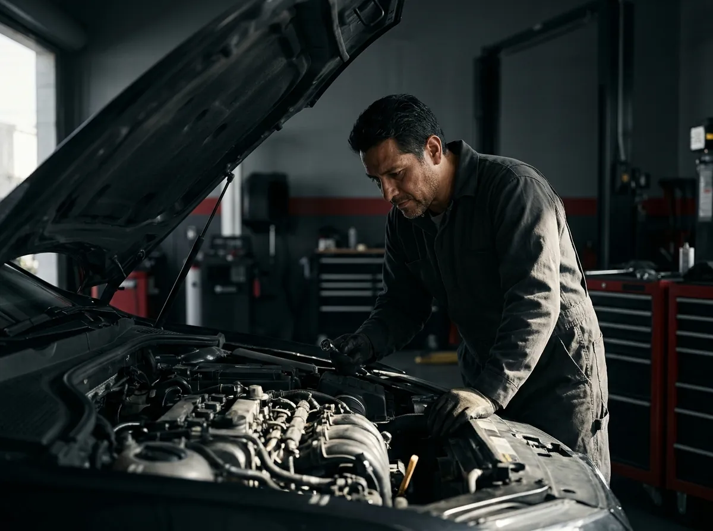

Primero el diagnóstico.
Después reparamos.
Te explicamos con total transparencia qué tiene tu auto antes de tocar una sola pieza. Diagnóstico especializado de un ingeniero mecánico y trabajos 100% garantizados.
Especialidades mecánicas
Atención y reparación integral para vehículos particulares y de trabajo con equipamiento de nivel automotriz.
Ajustes de motor
Ajustes y reconstrucción integral de motor de combustión con especificaciones y piezas de fabricante.
Servicios de frenos
Discos, balatas, calipers, rectificado y purgado de circuito con fluidos sintéticos de alto punto de ebullición.
Fallas electrónicas
Detección y resolución técnica en arneses, sensores automotrices, actuadores y redes CAN-BUS.
Computadoras y módulos
Diagnóstico y reparación a nivel componente de ECUs, BCMs, inmovilizadores y programación de interfaces.
Afinaciones mayores y menores
Fuel Injection, carburados, Gas LP y diésel ligero. Inyectores en tina de ultrasonido, bujías y filtros premium.
Direcciones y cremalleras
Reconstrucción y ajuste de cremalleras electroasistidas, hidráulicas y reemplazo de bombas de dirección.
Transmisiones automáticas y estándar
Mantenimiento y reparación de cuerpos de válvulas, embragues, convertidores de torque y sincronizadores.
Marchas, alternadores y luces
Diagnóstico y banco de prueba para motores de arranque, sistema de carga, batería y recableado de faros LED.
Reparación de suspensiones
Amortiguadores, resortes, horquillas, terminales, bujes de poliuretano y rótulas para máxima estabilidad y confort.
Diagnósticos físicos y scanner
Lectura de códigos en vivo, pruebas de compresión de cilindros, presión de combustible y análisis por osciloscopio.
Hojalatería y pintura
Enderezado de lámina, reparación estructural, pulido espejo y aplicación de pintura automotriz con cabina.
Servicio de grúa 24/7
Grúa de plataforma profesional, disponible todo el año.
Características
- Grúa de plataforma profesional.
- Capacidad para vehículos de hasta 7 toneladas.
- Atención 24 horas, los 7 días de la semana, los 365 días del año.
- Cobertura en toda la República Mexicana, excepto Estado de México y Ciudad de México.
Tarifas
| Zona metropolitana | $800 MXN |
| Maniobras adicionales | Costo adicional |
| Servicio foráneo | Según kilometraje |
| Maniobras foráneas | Costo adicional |
El precio del servicio foráneo se determina según la distancia recorrida.
Cómo trabajamos
Sin sorpresas. Cuatro pasos claros y documentados desde que recibimos tu vehículo hasta que te lo entregamos listo.
Revisamos tu auto
Escuchamos qué notas y aplicamos una inspección visual y técnica rigurosa antes de dar cualquier opinión apresurada.
Te explicamos
Te detallamos exactamente qué encontramos, qué componentes requieren intervención y la cotización clara sin costos ocultos.
Reparamos
El trabajo lo ejecuta y supervisa un ingeniero mecánico calificado, usando refacciones certificadas y el torque exacto de planta.
Protegiendo el trabajo
Todo queda respaldado bajo garantía formal: si algún detalle requiere revisión, regresas al taller y lo resolvemos de inmediato.
Misión, visión y valores
El compromiso ético, la ingeniería y la disciplina que respaldan cada unidad que entra a nuestro taller en Celaya.
Misión
Proporcionar un servicio de calidad para brindar soluciones fiables y duraderas que conserven las unidades en estado óptimo, eficiente y seguro, por medio de personal altamente capacitado, motivado y productivo que tiene como principal interés la seguridad y satisfacción de nuestros clientes. Para nosotros, ustedes y su unidad son lo más importante.
Visión
Establecer un modelo de liderazgo en el mantenimiento preventivo y correctivo de vehículos automotores; mantener un crecimiento continuo basado en la satisfacción del cliente, mejorando día a día los tiempos de respuesta, reduciendo el tiempo invertido en reparaciones y conservando los mantenimientos adecuados en tiempo de sus unidades, para conservar los activos de nuestros clientes.
Compromiso
Cumpliendo en tiempo y forma rigurosa con las expectativas acordadas de nuestros clientes.
Honestidad
Garantizando la procedencia y buena calidad del trabajo, así como de todas las refacciones instaladas.
Respeto
Conduciéndonos de una manera equitativa, transparente y atenta ante las necesidades de las personas.
Liderazgo
Tomar la iniciativa técnica y la responsabilidad absoluta para entregar el mayor valor en nuestro sector.
Un taller que responde por su trabajo
Tecnología automotriz avanzada de diagnóstico y trato directo con el ingeniero encargado.

Diagnóstico antes de reparar
Nunca tocamos ni cambiamos una pieza sin explicarte primero las causas de la avería y contar con tu autorización.
Ingeniero mecánico competente
Tu automóvil está en manos de un profesional con criterio de ingeniería aplicada, garantizando diagnósticos exactos.
Atención personal y con respeto
Trato cercano, explicación técnica sin rodeos y el compromiso de dejar tu auto en condiciones mecánicas ideales.
Lo que dicen de nosotros
4.7 ★ con 13 opiniones en Google Maps. Opiniones reales de conductores en Celaya, palabra por palabra.
"Un buen servicio con una buena atención y trabajos garantizados."
"Excelente atención y orientación, son profesionales en todo lo que hacen."
"El ING. mecánico es muy competente, eso hace que sea un muy buen taller."
"Cualquier detalle excelente técnico y lo repara muy bien a la primera."
"Muy buena atención y buen trato. Da tranquilidad dejar el auto aquí."
"Servicio 100% honesto. Te explican antes de reparar y no te meten piezas de más."
Tráelo al taller
Mándanos un mensaje por WhatsApp con los detalles de tu auto y te responderemos de inmediato con una orientación inicial. O si prefieres, llega directamente a nuestras instalaciones en Celaya.
LUN–VIE 9:00–19:00 · SÁB 9:00–13:00 · DOMINGO CERRADO
| Lunes a Viernes | 9:00 a 19:00 |
| Sábado | 9:00 a 13:00 |
| Domingo | Cerrado |